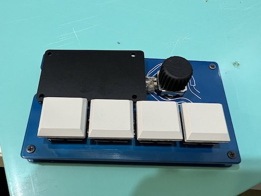

Procreate設定メモ 2022/05/01
概要
自作キーボードでお絵描き補助してるんだけど、これがなかなかうまく行く。
基本的にできることが増えるにあたって損はない。選択肢は多い方がいい。
次のような手順で自作キーボード x Procreate沼にハマっていった。
いい感じに設定できてきたのでメモまでに残しておく。
0. meishi2購入、組み立て
1. 4キーをundo/redo、ブラシサイズ up/downにセット
2. BMPでの無線化、キーマップ変わらず
3. BMPにロータリーエンコーダを追加、ブラシup/downをノブに、残りをスポイトとカラー開にセット
0. meishi2購入、組み立て
有線でiPad Pro USB-C端子と接続するキーボード meishi2。
0 ~ 2までの記事はこの辺
BMP(BLE Micro Pro)を使ってmeishi2を無線化したメモ
https://sassembla.github.io/Public/2022:04:02%2011-27-57/2022:04:02%2011-27-57.html
組み立てさえ済んで仕舞えば、あとのキーコンフィグはChromeだけで成立するのでまあよかった。
唯一の問題点はiPad Pro側の端子を有線USB-microケーブルで消費することで、セットアップに1minくらいかかる。
これが地味に面倒臭くて、まあでもundo/redo、ブラシサイズup/downが物理キーで実行できるという性能は破格だった。
Procreateに限らず、お絵描きAppはそのままだとundo/redoがジェスチャやタッチUI上のボタンに割り当てられる。
要するに目でタッチ対象を見ないと操作ができないうえに、ペンを持つ手か、反対の手の位置や動き、iPad自体の持ち方まで制約を受ける。
タッチデバイスなんで何を当たり前なことを、、って思うかもしれないけど、
線を引くって作業はポジションそのままでundoできてなんぼみたいなところがあって、undoが速く、描いてるところから手を動かさないで済むと、手の位置をじじらないままで次の線がすぐ引ける。
このリトライの速さはそのままイテレーションの速さになる。
失敗した時のコストを低く、やり直しを簡単にして、ベストでなければすぐundo、ってやるとすげえ楽。という話。
1. 4キーをundo/redo、ブラシサイズ up/downにセット
そんなmeishi2に対して右からredo/undo/ブラシup/ブラシdown に振った。
このキー配置だと左手の中指と人差し指、薬指と小指がそれぞれ対になる。
ただツールの習熟度合いでいうとこれはちょっと気が早くて、薬指と小指で触る2キーに割り当てるべきだったのはもっと別のアクションだったなーと気づくのはかなり後の話。
時代は大有線接続時代。
2. BMPでの無線化、キーマップ変わらず
というわけでBMPを買ってきて無線化した。
無線はいい、手間が減る。大変だったけど。テスターもなしに作ってよく一発で動いたね。
3. BMPにロータリーエンコーダを追加、ブラシup/downをノブに、残りをスポイトとカラー開にセット
前回の記事
Meishi2にロータリーエンコーダつけたい、、つけたくない？
https://sassembla.github.io/Public/2022:04:25/2022:04:25.html
というわけでついた。ロータリーエンコーダ(要するにツマミ)が、meishi2に。

これで、ブラシのサイズup/downがツマミに逃がせる。ブラシのサイズ変更はundo/redoに対応してないので、undo/redoを行う中指人差し指ペアで扱って問題ない。なんせ効かないので、、
まあ、むしろ左手=not 利き腕の薬指と小指だと繊細な操作ができないので、
ツマミみたいな2本の指を使う前提のUIをどの指で操作するかは確定ではある。
これでものすごく直感的に、なんなら塗りながらブラシサイズがいじれるようになった。
残った左2キーはそれぞれ右から カラーパレット開く/スポイト の2つが登録してあって、
スポイトは塗ってる色に対して中間色をそもそも探すときにショートカットでの起動が効く。
カラーパネル開はちょっと変わった使い方をしてて、調色はそもそもとして、開いた状態からもう一度開くと、カラーパネルが閉じる。
で、この方法で閉じると必ずペンツールが選択された状態になる。
これはずーーーっとモヤモヤしてたんだけど、カラーやレイヤー操作のパネルを閉じる = ペンツールを選択した状態に戻す方法が、画面のどこかをタッチ、になってて、つまりUIを切り替えるのに1タッチを要していた。
んでこれ誤爆すんだよね、、なので、ペンに切り替えたい時とかもどこか -> カラー -> もう一度カラーを押すと閉じてペンツール選択状態、ってやると、絶対にミスらない上に速い。
これで4キー + ツマミでのブラシup/downが相まって、いいかんじっていうのが2022/05/01。
以下余談。
M1 MBA vs BMP 設定ファイル更新問題
相性問題なのかBMPがストレージとして見える状態に対して、内部のファイルを書き換え or 保存したあとに起きる状態にブレがある。
具体的には、ファイルを上書き保存すると、いったんマウントが解ける状態に陥ることがある。
で、ファイル操作に連動でunmountが発生すると、だいたい書き込みに失敗してBMPがリセットされてるっぽい。
こういう状態は、ChromeのWeb USB繋いでコンソールを見てると「write error 7」とかで表示される。
そうでなくともBMPはファイルを通じた設定の上書きは死ぬほど不安定で、ファイル上は変わってるけどBMPを繋ぎ直したらファイルがぶっ壊れてたり、末尾に勝手に0000が書き込まれてたり、ファイル中の至る所に.(改行コード)が入ったりしてて、すごく気持ち悪い。
書き込みを行なってunmountが発生しない場合の方がおおいのだけれど、その状態になったら手動でunmountし、そのまま待って即自動mountされるはずなので、中のファイルをエディタとかで見る。
ぶっ壊れてる時はテキストエディタでは見れないのでバイナリエディタでみるといいだろう。
ファイル更新時にunmountされてファイルが更新できない問題への対処
Chromeを介したCLIを使い、reset、remove 1 の順に実行してからファイルを上書きする。
こうすると、エラーは出るしファイル上書きに連動してunmountが発生するが、なんと内容は保存される。どうなってんの。
まあいいやみたいな気持ちで運用しているが、正直騙し騙しなので、ファイルを使った上書きはあんまりやりたくない。
ただM1 MBAだからなのか、Chrome WebUSBを介したGUIからのキーマップ書き込みは、成功したことがない。ファイルが4/5程度の長さでぶった斬られて書き込まれて、尻切れなjsonが出来上がると言う、最悪な目に遭う。
まあ回避策はあったよって感じで、BMP以外にBluetoothに対応した何かもっと普及したものがあるならそっちがいいなあ、、独自規格は中の人に聞かないとわかんないことが多すぎて、、、
便利なのだけれど普及度 = 陳腐化、知識の氾濫、強さなので、難しいね～～って思ってる。
調べる方法がない仕様とか特に。